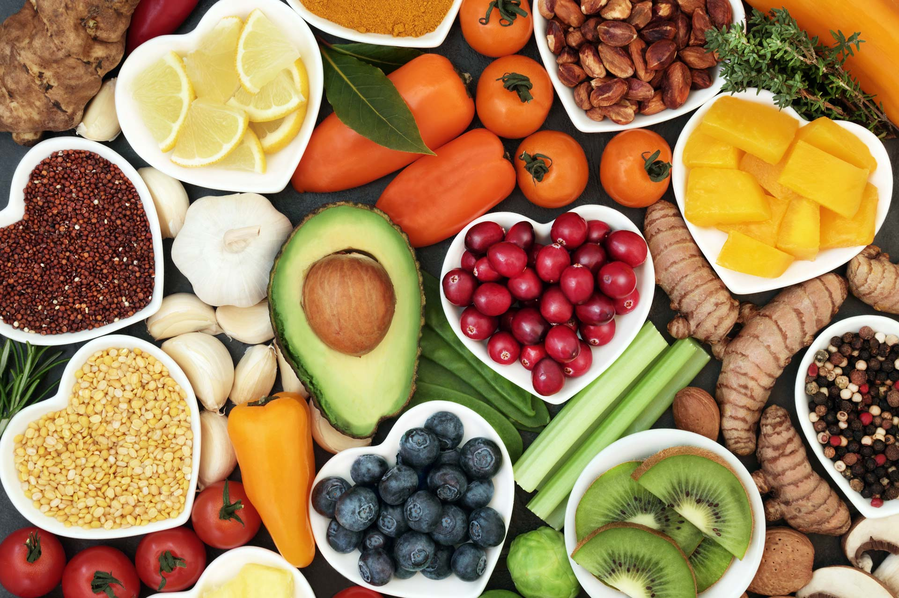
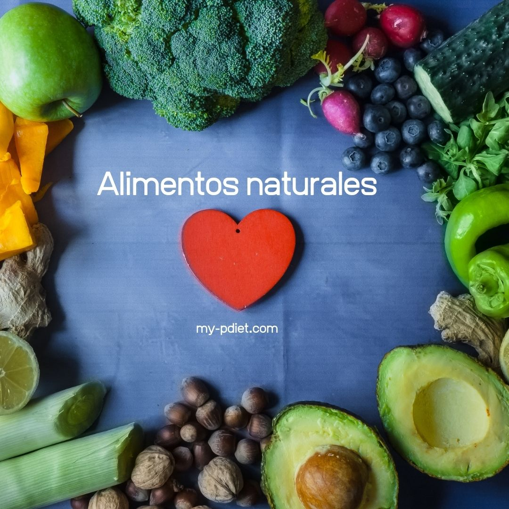
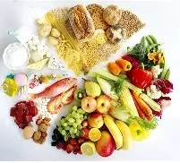
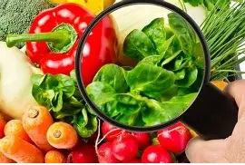
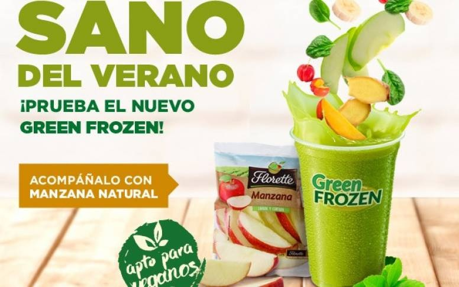
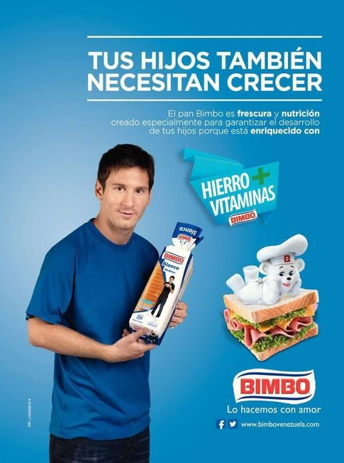

¿QUÉ SON LOS ALIMENTOS SALUDABLES?
Los alimentos saludables son aquellos que aportan nutrientes necesarios para el cuerpo, como vitaminas, minerales, proteínas, carbohidratos y grasas saludables.
Estos alimentos ayudan a mantener el organismo fuerte, con energía y en buen funcionamiento..

CARACTERISTICAS IMPORTANTES
NATURALES Provienen directamente de la naturaleza o han sido poco modificados a diferencia de los pseudoalimentos,
estos SI benefician a la salud y son importantes para tener un sistema estable, un buen fisico y no tener enfermedades como la diabetes por ejemplo e incluso
no sufrir de obesidad.

RICOS EN NUTRIENTES
Contienen vitaminas, minerales, fibra y proteínas los cuales son esenciales para nosotros los seres vivos.TIPOS
- Frutas🍎: Son alimentos naturales ricos en vitaminas, minerales y fibra que ayudan a mantener el cuerpo sano.
- Verduras 🥦: Aportan vitaminas, minerales y antioxidantes que ayudan al buen funcionamiento del organismo.
- Hambre extrema.
- Cereales y granos 🌾: Proporcionan energía al cuerpo gracias a los carbohidratos que contienen.
- Proteínas 🥚: Ayudan al crecimiento y reparación de los músculos y tejidos del cuerpo.
- Lácteos 🥛: Son alimentos que aportan calcio y proteínas, importantes para huesos y dientes fuertes.

FACTORES DE RIESGO EN LA ALIMENTACIÓN
- Consumo excesivo de comida chatarra 🍟: Comer muchos alimentos procesados puede causar problemas como sobrepeso o enfermedades.
- Exceso de azúcar 🍬: Consumir demasiada azúcar puede aumentar el riesgo de problemas como la Diabetes.
- Poca actividad física 🏃: No hacer ejercicio puede afectar la salud y favorecer el aumento de peso.
- Bajo consumo de frutas y verduras 🥦: No comer suficientes alimentos naturales puede provocar falta de vitaminas y minerales.
- Exceso de sal 🧂: Consumir mucha sal puede aumentar el riesgo de presión alta y problemas del corazón.

PREVENCIÓN Y CONTROL
- Alimentación balanceada 🥗: Consumir una variedad de alimentos como frutas, verduras, cereales y proteínas para obtener todos los nutrientes necesarios.
- Reducir comida procesada 🍟: Evitar o limitar alimentos con mucha azúcar, sal y grasas poco saludables.
- Hacer actividad física 🏃: Realizar ejercicio regularmente para mantener el cuerpo sano y fuerte.
- Mantener horarios de comida ⏰: Comer a horas adecuadas ayuda a tener mejores hábitos alimenticios.

CONTENIDO

